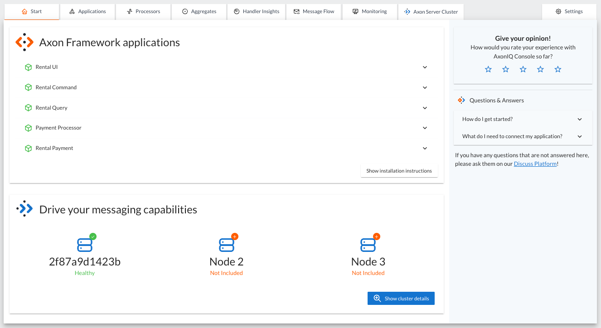
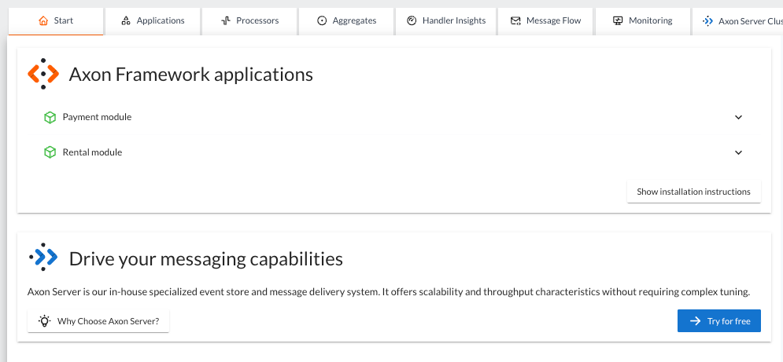
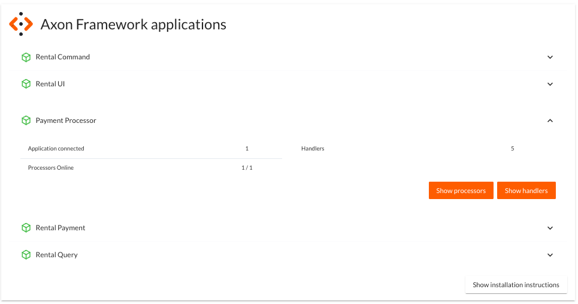
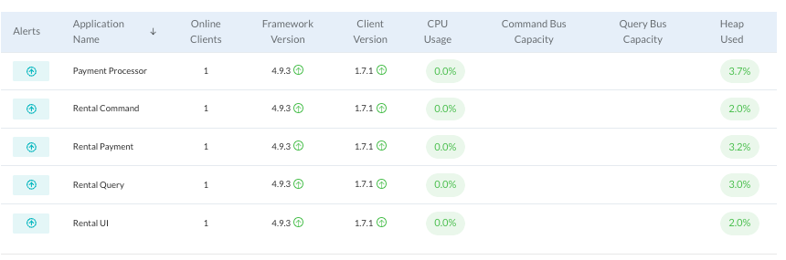
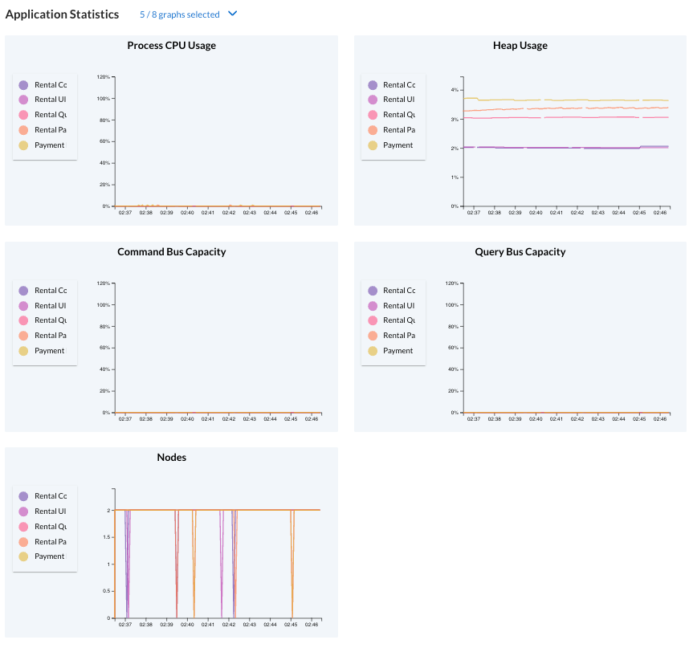
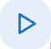
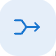
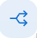

Overview your Application in AxonIQ Console
Once you have started your application and all the modules have connected to AxonIQ Console, you should see how they behave in the AxonIQ Console dashboard.
The AxonIQ Console dashboard groups all the information collected from your system into several tabs to give you a comprehensive view of your system and also allow to drill down into more detailed information for specific components.
Now that our application is connected let’s take a quick tour of the AxonIQ Console Dashboard.
Start tab
The Start tab displays all of the components from our project that have been configured and connected to AxonIQ Console.

|
Depending on the version of the application you have configured to connect to AxonIQ Console, you may see a different number of connected applications. The screenshot above corresponds to the docker-based bike rental application, which has the Axon Framework-based application divided into five microservices (if you are running the version of the bike rental application that you developed following the Building A Bike Rental Application tutorial, you may see only two modules connected). The docker-based bike rental demo also has Axon Server configured to connect to AxonIQ Console, so you may see a different thing in the bottom half of the screen reserved for the Axon Server instances. Don’t worry about this difference, as we will focus on the monitoring capabilities of the Axon Framework application for now. If you are running the bike-rental demo application you developed following the Building A Bike Rental Application tutorial, your Start tab will most likely look like this:  |
When you click on one of the modules, the panel displays additional information about the number of instances of that module connected, the handlers defined in that module, and the number of event processors the application is running.

Applications tab
The 'Applications' tab summarizes the different modules and their status.
The information is divided into two sections. In the upper half of the panel, there is a list of the different modules with specific information, such as the number of online instances, the Axon Framework version they are using or the CPU and memory usage of each of them.

Below this table are several graphs showing the evolution over the last ten minutes of various indicators of the modules' performance and behavior.

You can customize the list of graphs you want to see in this section by clicking on the arrow next to the message that says five out of eight graphs are currently selected. Doing that will display a drop-down list to select the graphs you want from all available graphs.
Detailed application information.
If you click on one of the modules from the table shown in the 'Applications' tab, the tab’s contents will change to display more information specific to that module.
For example, if you click on the 'Payment Processor' module, you will have access to more insight into the performance of that module and its components:
Online clients
This table shows the number of instances of the module running and connected to AxonIQ Console.
In this case, we will have only one instance in the table. But if, at some point, we need to scale out this module by deploying new instances because we notice that the Payment processor is taking more time to process the payments, we will see all these clients listed with different node identifiers:
Slowest handlers
The panel also lists the five slowest handlers in the application. For each handler, the table shows the component name, the handler method, and the time it takes the handler to process a message, measured in milliseconds, along with its median and ninetieth percentile.
If you see poor performance in your application, one of these slowest handlers might be a good place to look.
Clicking on any handler will take you to that specific handler detail view in the 'Handlers Insights' tab.
Application configuration
We can also check the configuration of the application’s different messaging components. You can change the view by clicking on the three tabs of the Configuration panel:
Components
The Components table displays information about the different messaging components used by the module, along with their implementation, whether the component is connected to an Axon Server instance, and any Dispatch or Handler Interceptors attached to the bus or serializers used.
![Screenshot of the Messaging Components view in the Configuration section of the Details view in the Applications tab of the AxonIQ Console. The view contains a table with three rows, one for each component configured in the Payment Processor module: a CommandBus, a QueryBus, and an EventStore. The table displays in various columns information such as the component implementation, the local segment implementation, a flag indicating whether this component is connected to an Axon Server instance, the default context, the list of configured dispatch interceptors, the list of handler interceptors, and the serializers used in each component.](../../_images/ac-details-apps-config-components.png)
This information can be useful, for example, to check if an interceptor is attached to a Command or QueryBus that might affect the time it takes to process certain types of messages or if the serializer used to send or receive the messages is the expected one.
Processors
The Processors table displays information about the event processors used in the application, along with more detailed information such as processor type, batch size, error handlers, or any interceptors or other components configured or attached to the processor.
Clicking on a specific processor in this table will take you to the 'Details View' of that particular processor within the Processors tab.
Versions
Clicking on the 'Versions' label lists all used Axon Framework module libraries and their versions. This view helps see the Axon Framework version used by the application and check that all libraries are using the latest released version.
You can also check the 'Show Unused Libraries' checkbox to include the list of libraries defined but not used by the module.
Application statistics
The last section of the Application Details tab consists of several graphs that show the evolution of various metrics of the application’s behavior over time.
![Screenshot of the application statistics graphs displayed for an application or module in the details pane of the Applications tab. The screenshot shows four different graphs showing the application’s 'Live Thread Count', 'System Load', 'Heap Usage' and 'Number of Nodes' over the last 10 minutes. Above the graphs, to the left of the Application Statistics title, there is a label that says '4 of 8 graphs selected' with an arrow indicating that this is a drop-down menu. At the top right of the panel, there is another drop-down box that displays the 10-minute time period configured for the graphs.](../../_images/ac-details-apps-stats.png)
Select the graphs to display.
You can select the graphs you want to see by clicking the arrow next to the label that indicates four of eight graphs are selected. This will display a drop-down box with all available graphs.
Configuring the time window for the graphs
By default, the graphs in the Application Statistics section show the evolution of the module’s behavior over the last ten minutes. However, you can configure a different time window using the drop-down selector at the top right of the graphs.
If you select a different value for the time window, your graphs will update to show the evolution of your application’s behavior over that period.
| The free plan level of the AxonIQ Console only retains information from your connected applications for the last 10 minutes. This time range should be sufficient for evaluation purposes, but if you see the benefits of using AxonIQ Console to monitor your system, you may want to use one of the AxonIQ Console paid tiers with your production applications, which retain information for longer. |
Click on any of the graphs to enlarge it in the center of the screen.
Processors tab
The Processors tab collects information about the event processors defined in your system. The tab displays a table with the different processors, the application or module where they are defined, the processor name, and information about the status and performance of each event processor.
|
Event Processors are the components in an Axon Framework application that perform the tasks necessary to handle an event (for example, launching a transaction if required) and call the event handler that defines the business logic associated with receiving the event. You can learn more about Event Processors in Axon Framework Applications in the dedicated section of the Axon Framework Reference Guide. |
In the case of our application, we can see the three event processors that we have defined in our bike-rental application:
Processor details
If you click on any processor in the table, the AxonIQ Console will display a page with detailed information gathered from its behavior.
For example, if we click on the `io.axoniq.demo.bikerental.payment' processor from the `Payment Processor' application, we will see more details on how this event processor is performing:
Let’s go through the different sections.
Processor summary
The details page first displays the processor capacity summary table:
![Screenshot of the Summary Information table from the Processor Details view in the Processors tab of the AxonIQ Console dashboard. The table displays a summary of basic information about the processor’s performance: The processor name (io.axoniq.demo.bikerental.payment), the processor mode (Pooled Streaming), the number of running instances (1 of 1), the number of claimed segments (16), the claim percentage (100%), the free segment capacity (32751), and the latency expressed as two values, the ingest latency (indicated by a down arrow: 3 ms) and the commit latency (indicated by a DB icon with a plus sign: 4 ms). Finally, a row shows whether automation is configured for the processor (no automation is shown in the screenshot). Below the table is a row of four buttons to start, pause, merge or split segments claimed by the processor, and reset the processor configuration.](../../_images/ac-details-processors-summary.png)
In addition to basic information about the processor, such as its name, mode, number of running instances, or details about the segments claimed by the processor, this table also shows whether any automation rules are configured for the processor (in the case of the screenshot, there are none).
Finally, the summary table offers several buttons to modify the behavior of the processor, which can be helpful in case of poor performance:
-
 The button with the play icon allows you to start the Event Processor on all nodes.
-
The Pause button allows you to pause the Event Processor on all nodes.
-
. The merge button merges the two largest segments into one. The merge can only happen if there is more than one segment.
-
 The split button splits the smallest segment into two. This action can only be done if there are free threads and all segments are in use.
| To learn more about how an Axon Framework-based application processes the events and how the segments are split or merged, you can read the xref:axon-framework-reference:tuning:event-processing.adoc#_increasing_and_decreasing_segment_counts section of the Event Processing Tuning article in the Axon Framework Reference Guide. |
A fifth option is to reset the processor. Resetting the processor means calling any @ResetHandler methods on that processor and resetting the tokens to a desired position. After clicking the 'Reset Processor' link, the AxonIQ Console displays a dialog box asking you to specify the preferred position to which you want to set the processor.
| A field to set the desired date and time will appear if you select the 'Index at a certain date and time' option. |
Instances
In addition to the summary information table, another table displays specific information for each of the instances.
Along with the processor information for each instance, such as status, stream percentage, or latency, a column allows you to pause or start the processor in a specific instance. The buttons in this column allow more granular operation of the processors than those shown in the Processor summary.
Segments
Clicking the Segments tab in the processor details view displays a list of all the segments into which the event stream is divided.
The segment table provides a button in the Actions column to move any segment to another instance if multiple instances are running the event processor.
Event handlers
When you click the Event Handlers tab, the processor details view displays a table of all defined event handlers associated with the event processor.
Automation
The last tab of the central area in the processor detail view allows you to configure some automation rules for the event processor.
This panel allows configuring some rules to balance the segments automatically or to scale and balance the segments in certain cases.
| This feature is only available in the paid plans of AxonIQ Console. You can check the different plans of AxonIQ Console to learn about these premium features. |
Processor statistics
Right below the main area, the processor details view displays three graphs showing statistics on how the event processor’s various performance metrics have evolved over time.
By default, this section contains graphs of the percentage of segments in use, latency, and number of nodes online.
Clicking the blue down arrow that indicates the number of graphs selected will display a drop-down selector that allows you to select or deselect the graphs in this section.
Finally, you can configure the time window displayed by the graphs using the 'Time Window' drop-down list at the top right of the section.
You can view each graph in more detail by clicking on it.
Application statistics
The last section of the processor details view contains additional graphs with statistics on various application performance metrics that might be useful for checking the processors' performance.
In this case, by default, you will see graphs that show the evolution over the last ten minutes of the application’s CPU usage, the system CPU usage, the command bus and queuing bus capacity, the number of live threads in the different applications, or the system load, among other graphs…
As in the processor statistics section, you can select or deselect the graphs displayed in this section by clicking on the blue down arrow that indicates the number of chosen graphs.
You can also configure the time window displayed by the graphs using the 'Time Window' drop-down list at the top right side of the section.
Aggregates tab
The Aggregates tab lists all aggregates defined as part of the command model.
![Screenshot of the Aggregates tab of the AxonIQ Console dashboard, showing information for the two aggregates defined in the bike-rental demo application: Payment and Bike. The tab displays a nine-column table that shows the following information for each aggregate: A check mark to indicate if an alert has been triggered associated with the aggregate, the application name, the aggregate name, the error rate, throughput, and execution time of commands sent to the aggregate, the load and lock time, and the stream size of events read to load the aggregate.](../../_images/ac-dashboard-tab-aggregates.png)
When you click one of the aggregates, the tab displays the details view for that aggregate.
Aggregate details
Clicking on the 'Payment' aggregate row in the Summary table on the Aggregates tab displays the following details about the behavior of the processing requests associated with this aggregate.
Aggregate handlers
The first table in the aggregate details view of the 'Aggregates' tab displays any message handlers (command handlers in this case) defined in the application associated with the aggregate.
As we can see, there are three commands in our `bike-rental' demo application that affect the `Payment' aggregate: The `PreparePaymentCommand', the `ConfirmPaymentCommand', and the `RejectPaymentCommand'. In our application, the handlers for the first two are working with reasonable throughput, while the handler for the last one is idle because the application does not receive any commands of this type.
Message sources.
In an event-based distributed system, losing track of where messages are coming from and where they are going can be easy. The AxonIQ Console provides convenient ways to see how the various messages (commands, queries, and events) travel between the different components of our system.
The Message Sources (and Message Destinations) tables in the Aggregate Details view of the Aggregates tab in the AxonIQ Console dashboard are useful tools for identifying where the commands that affect the aggregate are coming from.
In our example, we can see the different message handlers or components that trigger any commands that affect the Payment aggregate. The table shows that although several points in the source code could trigger commands for the aggregate, only the receipt of the BikeRequestedEvent triggers the commands that affect the aggregate.
| Clicking on any of the rows in the table will take you to the Handler Insights view, which shows the handler’s details for that message. |
Message destinations
Similar to the Message sources., the message destinations allow you to see which messages are triggered by the aggregate and any components defined in our system that handle those messages.
In our example, we can see that the aggregate triggers three different messages: PaymentConfirmedEvent, PaymentPreparedEvent, and PaymentRejectedEvent.
We can also see all the handlers defined for each of these events. For example, the PaymentConfirmedEvent has two components that define a handler: the PaymentSaga and the PaymentStatusProjection.
| Clicking on any of the rows in the table will take you to the Handler Insights view, which shows the handler’s details for that message. |
Aggregate statistics
Below the general details of the aggregate, a section displays graphs showing how various metrics have evolved over time relative to their behavior.
In this case, by default, you will see graphs that show the evolution of the distribution of the time it takes to process a (command) request, affecting an aggregate, the message rate, or the time spent in the handler method, among other graphs.
As with any other section of the AxonIQ Console dashboard that displays these graphs, you can select or deselect the graphs shown in this section by clicking on the blue down arrow that indicates the number of chosen graphs.
You can also configure the time window displayed by the graphs using the 'Time Window' drop-down list in the upper right corner of the section.
Finally, if you need to see any of the graphs in more detail, you can click on them to enlarge them in the center of the page.
Handler insights
The Handler Insights tab provides a view of all the message handlers defined in our system. The table shown in this view is a complete view of all points in our application that receive and process messages of any type.
The main table lists all our applications' message handler methods to process commands, events, or queries.
The table displays information for locating each handler, such as the application, the component, and the message it handles. Below this information, the table also shows some metrics to see how the handler is performing.
|
Our example shows that the This alert is one of the benefits of using the AxonIQ Console to monitor and detect problems in our system. It is just a taste of the AxonIQ Console’s benefits and power. In a later section of this tutorial, we will deliberately create more problems in our application and see how they are detected. |
Filtering handlers
On the right side of the main table showing all message handlers, there are several categories that allow you to filter the list and narrow down the information you want to see.
For example, if we only want to focus on the requests handled by a specific application, such as the payment processor, we could click on 'Payment Processor' under the 'All Applications' category and then select 'RequestMessage' under 'All Message Types', and we will see our table updated:
If you want to reset the filter to show all handlers again, select All Applications and All Message Types in the side menu.
Searching for a specific handler.
If you know the name of a particular message handler, you can use the 'Filter Handlers' input file at the bottom of the filter side menu to enter the name - or part of it - of the message type or component type.
When you start typing, the main table will update its contents with only those message handlers whose component name or message name contains the search text you introduced.
Handler details
If you click on any of the rows in the 'Handlers Insights' tab, the page will display detailed information about that specific handler.
Handler statistics
The first section of the Handler Insight details view displays graphs showing how various handler behavior metrics have changed over time.
| If you want to see any of these graphs in more detail, you can click on it and it will expand and move to the center of the screen. |
Handler overview
The first graph shows an overview of the time the handler spends in the different steps of preprocessing a message. This graph includes the handler execution time, the time spent committing the message to the buses, and the overhead.
Message rate
The message rate graph shows the history of the number of messages received and processed per minute over the last period. It also shows the number of messages that caused an error during processing.
Total time
The Total Time graph shows the trend of various statistical measures of the time it took to process a message in the handler.
The graph shows the time it took to process the fastest message (the minimum time), the time it took to process the slowest message (the maximum time), the average of the time it took to process messages (the median), and the maximum time it took to process ninety percent of the fastest messages.
Handler time
The 'Handler Time' graph shows the evolution of various statistical measures of the time taken by the handler to process messages.
The graph shows the time it took to process the fastest message (the minimum time), the time it took to process the slowest message (the maximum time), the average of the time it took to process messages (the median), and the maximum time it took to process ninety percent of the fastest messages.
Message sources
By clicking on the 'Message Sources' label, the Handler Insights detail view displays all components that send the messages processed by this handler.
In an event-based distributed system, this information is useful for tracking messages and connecting the message handler to other components in our system that produce the information our component consumes. This helps connect the various components of our distributed architecture and sometimes provides the context we need to debug and understand potential problems.
Message destinations
Similar to the Message sources., it is sometimes helpful to see which components will receive and handle events or messages sent by the handler we are examining.
This is the information we see when we click on the 'Message destinations' label in the 'Handler Insights' details view.
Message flow
In the details view of the Handler Insights tab and the Aggregates tab, we have already seen that AxonIQ Console provides a way to know the source of the messages (events, commands, or queries) processed by a particular handler and to see the components that receive other messages that a particular handler sends.
This feature provides an excellent way to see a component’s "neighbors," that is, the handlers related because they send or receive messages associated with the current component. It also allows us to get a small view of how certain messages flow through this particular component.
Apart from that, it is useful to have a more comprehensive view of the messages flowing in our system. The Message Flow tab provides exactly this view.
By default, this diagram shows the different elements of our system and how they are connected:
-
The applications are represented by large circles
-
The components (aggregates, projections, or sagas) that are the source or destination of messages (events, commands, or queries), represented by smaller dots.
-
The messages that flow from message sources to message destinations. These are represented by animated dotted arcs. The stroke of these lines is thicker or thinner depending on the amount of messages flowing: the thicker the line, the more messages are sent in that particular connection.
-
Optionally, you can also select the diagram to include the buses from which some messages originate.
Customize the message flow diagram.
The diagram is configurable, so you can customize it to better represent your system according to your preferences.
The first thing you can do is zoom in or zoom out of the diagram by scrolling your mouse over it.
You can also rearrange any elements on the diagram (applications or components), and the rest of the connected components will follow your new arrangement.
In addition to manually arranging the elements on the diagram, you can also adjust some properties of how the diagram is drawn. On the right side of the diagram, you have several sections that change the "physics" of the elements in the diagram.
You can spend some time playing around with the different options and seeing how they render different versions of the diagram, which will show how the different components of your application are connected and how messages flow through them.